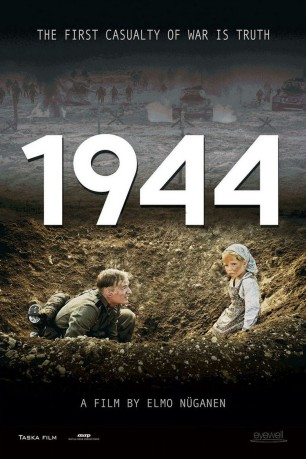

#2090 Brüder Feinde
Alternativ: 1944
 
 IMDB-Wertung: 7.1 / 10
IMDB-Wertung: 7.1 / 10  Metascore: 0
Metascore: 0 
Im Rahmen des Hitler-Stalin-Paktes fällt das seit 1918 unabhängige Estland 1939 an die Sowjetunion. Stalin lässt sofort die Begüterten und Patrioten deportieren oder ermorden, viele junge Männer werden zur Roten Armee eingezogen. 1941 erobern die Deutschen das Gebiet, jetzt zieht es aufgrund der jüngsten Erfahrungen viele Männer zur Wehrmacht, um gegen die Russen zu kämpfen. Als 1944 die deutsche Welle zurückschwappt und die Rote Armee nachstößt, stehen sich auf beiden Seiten und heimischer Erde Esten als Feinde gegenüber.
Jahr: 2015
Dauer: 100 Minuten
FSK: 16
Land: Estonien Studio: Ascot Elite Home EntertainmentTonspuren:
Untertitel:
Auflösung: 1080p (1920x808) Größe: 4444 MB
Genre: Drama, Krieg
Regisseur: Elmo Nüganen
Drehbuch: Leo Kunnas
Soundtrack: Jaak Jürisson
Darsteller:
- Marko Leht als Valter Hein
- Kaspar Velberg als Karl Tammik
- Maiken Schmidt als Aino Tammik
- Mait Malmsten als Omavalitsuse tegelane
- Hendrik Toompere Jr. Jr. als Kristjan 'Põder'
- Kristjan Üksküla als Jüri Jõgi
- Sepo Seeman als Taluperemees
- Anne Reemann als Omakaitse naisvõitleja
- Gert Raudsep als Ants 'Saareste'
- Priit Pius als Vennad Käärid
- Märt Pius als Vennad Käärid
- Priit Strandberg als Lembit 'Raadik'
- Ain Mäeots als Kapten Evald Viires
- Ivo Uukkivi als Rudolf Kask
- Jaak Prints als Autojuht Richard Pastak
- Kristjan Sarv als Abram Joffe
- Pääru Oja als Sanitar Elmar 'Säinas'
- Rain Simmul als Prohhor Sedõhh
- Tõnu Oja als Omakaitse leitnant
- Martin Mill als Alfred Tuul
- Anne Margiste als Talunaine
- Henrik Kalmet als Voldemar 'Piir'
- Külli Teetamma als Ema lastega
- Peeter Tammearu als Kreml
- Tanel Saar als
- Priit Loog als Paul Mets
- Andero Ermel als Oskar Lepik
- Thomas Kolli als Soldier - German Army
- Karl-Andreas Kalmet als Vladimir 'Kamenski'
- Magnús Mariuson als Taanlane Carl
- Peeter Jürgen als Talumees
- Kristo Viiding als Leonhard 'Talu'
Datei: X:\2015(A-F)\Brüder Feinde (2015, FSK16, 1920x808).mkv seit 02.10.2015
Festplatte: HD 2015(A-Z)
 Es gibt insgesamt 143 Filme in der Gruppe '2015(A-F)'
Es gibt insgesamt 143 Filme in der Gruppe '2015(A-F)'